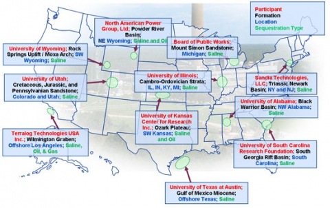

In September 2009, the U.S. Department of Energy announced the award of 11 projects with a total project value of $75.5 million* to conduct site characterization of promising geologic formations for CO2 storage. These Recovery Act projects will increase our understanding of the potential for these formations to safely and permanently store CO2.
The information gained from these projects (detailed below) will further DOE's efforts to develop a national assessment of CO2 storage capacity in deep geologic formations.

* Subsequently, the Board of Public Works project in Holland, MI has been withdrawn leaving 10 projects valued at $70.7 million with a DOE share of $46.6 million.
- Board of Trustees of the University of Illinois (Champaign, IL) – An Evaluation of the Carbon Sequestration Potential of the Cambro-Ordovician Strata of the Illinois and Michigan Basins. The University of Illinois will evaluate the carbon storage potential of the Cambro-Ordovician Strata of the Illinois and Michigan Basins which encompass most of the states of Illinois, Indiana, Kentucky, and Michigan. A best practices manual for site characterization, to be developed during the project, will help reduce storage risk by documenting the uncertainties related to fracturing, injectivity, and geochemical interactions for these specific formations. DOE share: $4,803,000; Recipient share: $1,469,759; Duration: 36 months
- North American Power Group, Ltd. (Greenwood Village, CO) – Two Elk Energy Park Carbon Site Characterization Project. North American Power Group will conduct a characterization study in multiple formations for the south-central part of the Powder River Basin near the Two Elk Energy Park which is in development. The project will characterize a potentially viable storage site and valuable opportunities for research and development in the Powder River Basin. The project will also have an economic impact on the region, setting the stage for additional facilities and job. DOE share: $4,949,962; Recipient share: $1,203,256; Duration: 36 months
- Sandia Technologies, LLC (Houston, TX) – Site Characterization - Triassic Newark Basin-New York & New Jersey. Sandia Technologies will examine the potential for large-scale, permanent storage of CO2 in deep strata of the Newark Rift Basin, which underlies a heavily industrialized region comprising parts of New York, New Jersey, and Pennsylvania. The primary focus of this project is to examine and prove the suitability of these Triassic to Cambrian formations for geologic storage of CO2. If carbon storage proves to be viable, the resulting CCS industry in the Newark Basin region could create long-term clean energy employment opportunities. DOE share: $3,869,994; Recipient share: $974,000; Duration: 24 months
- South Carolina Research Foundation (Columbia, SC) – Geologic Characterization of the South Georgia Rift Basin for Source Proximal CO2 Storage. South Carolina Research Foundation will evaluate the feasibility of CO2 storage in the Jurassic/Triassic saline formations of the buried South Georgia Rift. Both scientific/technical benefits and economic benefits are expected to be derived from this project. The South Georgia Rift saline formations have been identified as a prospective area for CO2 storage with several storage characteristic unknowns that are being targeted by this project. DOE share: $4,950,639; Recipient share: $1,621,325; Duration: 36 months
- Terralog Technologies USA Inc. (Arcadia, CA) – Characterization of Pliocene and Miocene Formations in the Wilmington Graben, Offshore Los Angeles, for Large Scale Geologic Storage of CO2. Terralog Technologies will implement a comprehensive research program to better characterize Pliocene and Miocene sediments in the Wilmington Graben for high volume CO2 storage. The Los Angeles Basin presents a very unique and special combination of high need and significant opportunity for large scale geologic storage of CO2. This project will establish and document the potential for more than 50 million tons of CO2 storage in a high need area. DOE share: $4,819,813; Recipient share: $1,442,454; Duration: 36 months
- University of Alabama (Tuscaloosa, AL) – Site Characterization for CO2 Storage from Coal-fired Power Facilities in the Black Warrior Basin of Alabama. The University of Alabama will conduct site characterization of the Black Warrior basin that will include drilling and coring a test well; quantifying capacity and injectivity using an array of advanced petro physical and geophysical techniques; and analyzing seal integrity and containment using petro physical, geophysical, well testing, and simulation techniques. The results of these activities will be used to develop a regional plan for the application of carbon storage technologies. DOE share: $4,849,924; Recipient share: $1,688,697; Duration: 36 months
- University of Kansas Center for Research, Inc. (Lawrence, KS) – Modeling CO2 Sequestration in Saline Aquifer and Depleted Oil Reservoir to Evaluate Regional CO2 Sequestration Potential of Ozark Plateau Aquifer System, South-Central Kansas. The University of Kansas characterization is focused on the Paleozoic-age Ozark Plateau Aquifer System in south-central Kansas. The project will integrate seismic, geologic, and engineering approaches to evaluate miscible CO2-EOR and tertiary oil recovery potential in the Mississippian oil reservoir and CO2 storage potential in the underlying Arbuckle Group saline formation. DOE share: $4,974,299; Recipient share: $1,251,422; Duration: 36 months
- University of Texas at Austin (Austin, TX) – Gulf of Mexico Miocene CO2 Site Characterization Mega Transect. The University of Texas at Austin will conduct a regional evaluation of storage opportunities in the Miocene aged formations for Texas offshore State lands. The project will also complete a detailed geologic characterization site assessment of specific reservoirs that are promising for CO2 storage. The project is designed to help meet the goal of characterizing geologically representative formations that may be used to economically store anthropogenic CO2 emissions. DOE share: $4,594,350; Recipient share: $1,200,000; Duration: 36 months
- University of Utah (Salt Lake City, UT) – Characterization of Most Promising Sequestration Formations in the Rocky Mountain Region. The University of Utah will characterize the CO2 storage potential of three, deep-saline formations within a large, Laramide-age structure. The proposed study includes detailed structural analysis of the large forced fold, as well as the characterization within the structure of the Dakota, Entrada, and Weber saline formations and their overlying seals. A detailed risk assessment, mitigation management plan, and reservoir-engineering plan will be developed for the region. DOE share: $3,796,050; Recipient share: $967,127; Duration: 36 months
- University of Wyoming (Laramie, WY) – Site Characterization of the Highest-priority Geologic Formations for CO2 Storage in Wyoming. The University of Wyoming will undertake the work necessary to move from preliminary characterization to commercial development of two CO2 storage sites (the Rock Springs Uplift and the Moxa Arch) in the Rocky Mountain region. Objectives include to: design and acquire 3-D/3-C seismic data and other geophysical surveys of the Rock Springs Uplift; design and complete a stratigraphic test well on the Rock Springs Uplift to obtain wire line logs, core, and cuttings to complement similar information from the Moxa Arch; and complete detailed risk assessments and design commercial-scale storage projects for both sites. DOE share: $4,975,000; Recipient share: $11,913,088; Duration: 36 months